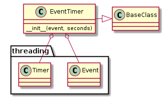
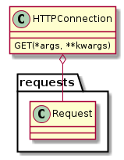
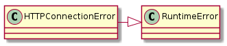

This is a client-connection to communicate with HTTP-servers. Since some of the parameters are reminiscent of telnet and SSH sessions I will model it somewhat after the SSHConnection, but it will primarily act as an interface to the requests package.
An example use based on the Broadcom BCM94718NR:
connection = HTTPConnection('192.168.1.1', password='admin', path='radio.asp')
response = connection(data={'wl_unit':'0'})
print response.text
The previous snippet would have printed the html page associated with the 2.4 GHz radio. The settings were based on Aren’s Broadcom Code which translates to curl’s:
curl -d 'wl_unit=0' --user :admin http://192.168.1.1/radio.asp
Setting parts of the URL in the HTTPConnection will re-build the URL so you could get the ssid page instead of the radio page like this:
# re-using the previous connection
connection.path = 'ssid.asp'
response = connection.get(data={'wl_unit':'0'})
print response.text
The use of connection.get is not a typo, the __call__ is just a ‘GET’ call, since I figured it is the most common thing to do, so using it is the same as using .get. The response returned is a requests.Response object so the HTTPConnection doesn’t act exactly like the other connections (which return standard-out and standard error in a tuple). There’s more information there so I figured it would be better to return the whole thing rather than throw away stuff.
Since I tested this a lot using ipython I made it so that it will store the data attribute and add it automatically when a request is made:
connection = HTTPConnection('192.168.1.1', password='admin', path='radio.asp', data={'wl_unit':'0'})
response = connection()
print response.text
This should work the same as the first example. If you want to temporarily use a different data-set, pass in the dictionary (using the parameter name explicitly):
response = connection(data={'wl_unit':'1'})
If you want to get rid of the data set it to None, if you want to change it just assign it a new value:
# no default data
connection.data = None
# new default data
connection.data = {'wl_unit':'1'}
In practice I think setting and resetting the data parameter is probably not a good idea, either you should pass in the data or set it once and leave it, otherwise it gets confusing, but it is there if needed.
In this initial use I don’t use parameters so I didn’t do the same thing for them or any other settings that can be passed in –
- The URL and authentication are always taken from the HTTPConnection properties
- The data will be taken from the HTTPConnection properties if set or from the arguments if passed in
- Everything else needs to be passed in when the connection is called
If you hit the Broadcom web-server too soon after a previous call to it’ll return an error or erroneous page. To prevent this I was having the users of this sleep between calls, but that seems inelegant and causes unnecessary waiting sometimes (kind of like taking the bus).
Instead the HTTPConnection will maintain an EventTimer and block if you try to make a new request too soon (too soon being something that needs to be empirically determined by the user, right now it seems to be a half second).

EventTimer([event, seconds]) |
A timer object to set an event |
EventTimer.set_event() |
Sets the event |
EventTimer.start() |
The main interface - clears the event then starts the timer |
EventTimer.clear() |
A convenience method for users to call the event.clear method. |
EventTimer.wait([timeout]) |
Calls event.wait if timeout not given use self.seconds |
wait Decorator¶To make using the EventTimer easier, a wait decorator can be used. The procedure:
- Call event.wait in case a previous timer is still running
- Clear the event
- Call the decorated method
- Start the timer
Basic Use:
@wait
def do_something(self):
# do something here
return
Warning
This is a method decorator – it assumes the object it belongs to has a self.timer property (which is an instance of EventTimer).

HTTPConnection(hostname[, username, ...]) |
Acts as a client connection to an HTTP server |
HTTPConnection.__call__(*args, **kwargs) |
A shortcut for GET requests |
HTTPConnection.request(*args, **kwargs) |
|
HTTPConnection.__getattr__(method) |
The parameters are the same as requests.request (method is converted to uppercase) |
The URL is being put together with the python urlparse.urlunparse method. For future reference, the tuple that is passed to it has these fields:
| Name | Index | Description | Default |
|---|---|---|---|
| scheme | 0 | URL scheme specifier | empty string |
| netloc | 1 | Network location part | empty string |
| path | 2 | Hierarchical path | empty string |
| params | 3 | Parameters for last path element | empty string |
| query | 4 | Query component | empty string |
| fragment | 5 | Fragment identifier | empty string |
